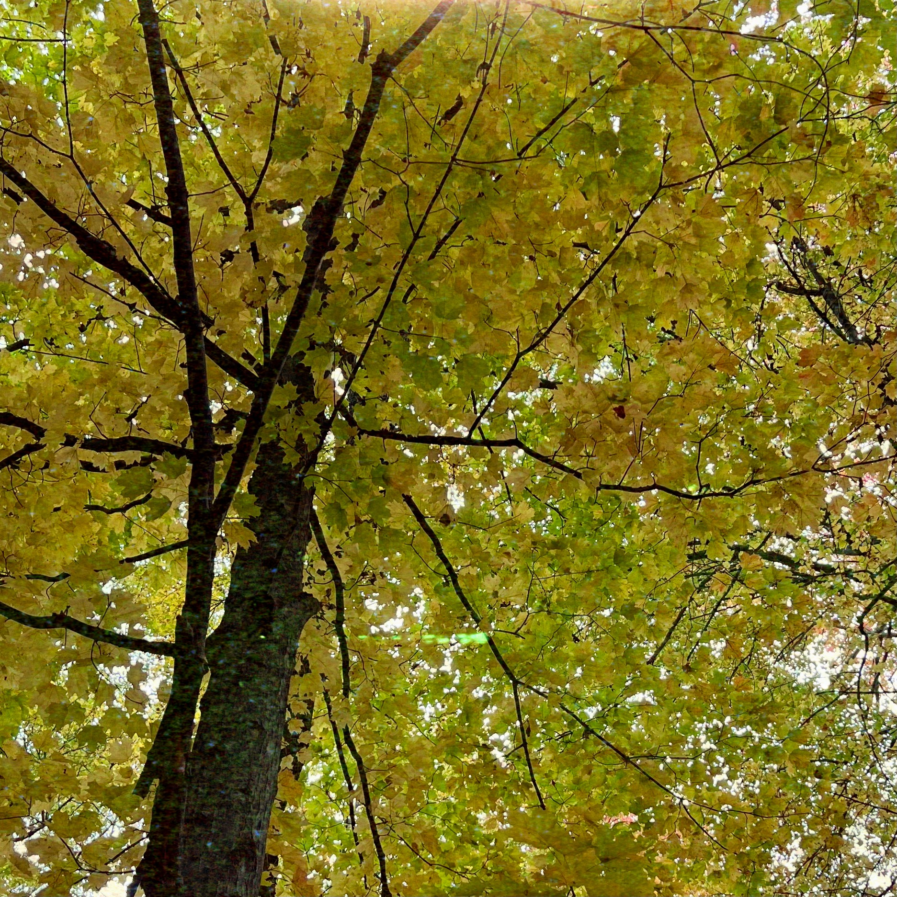
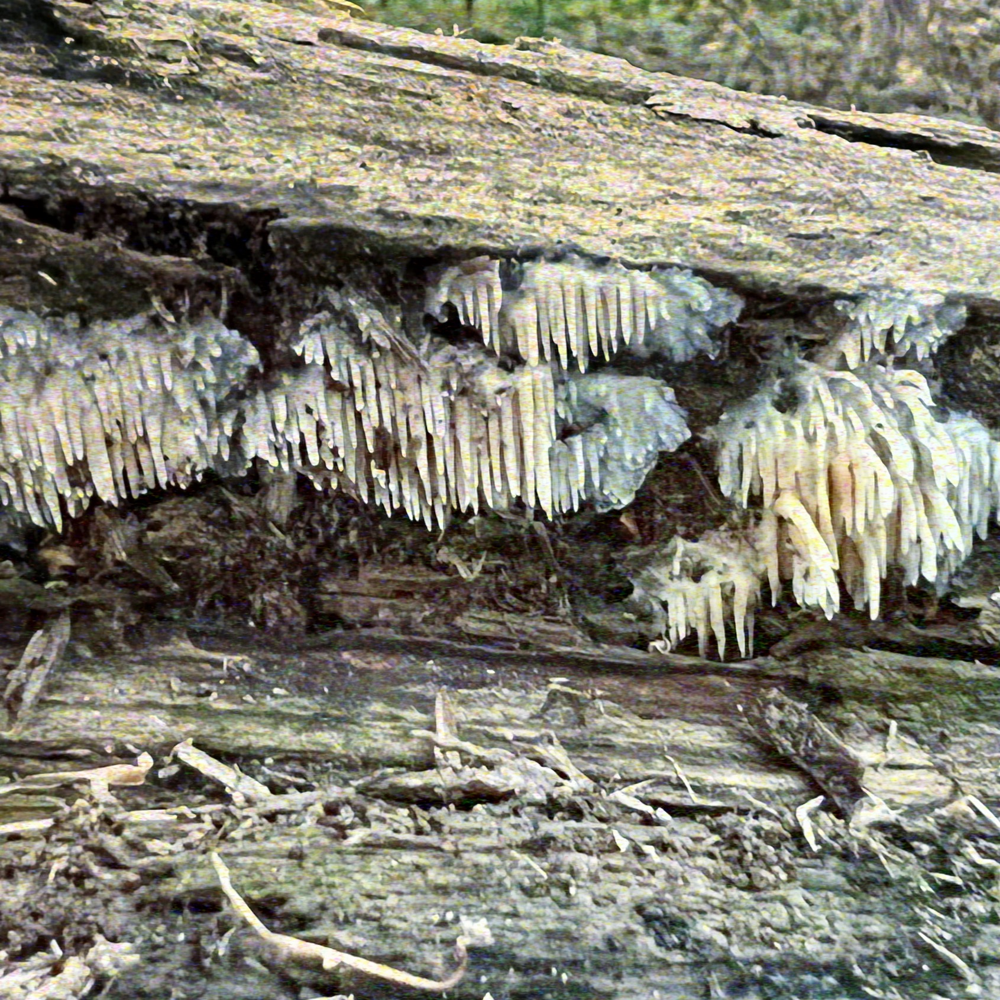
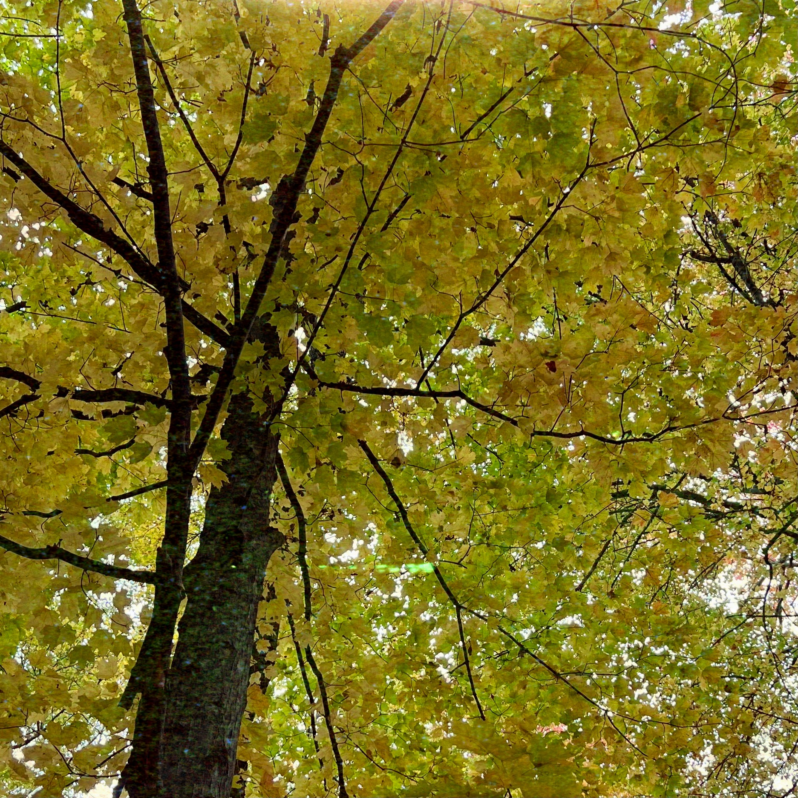
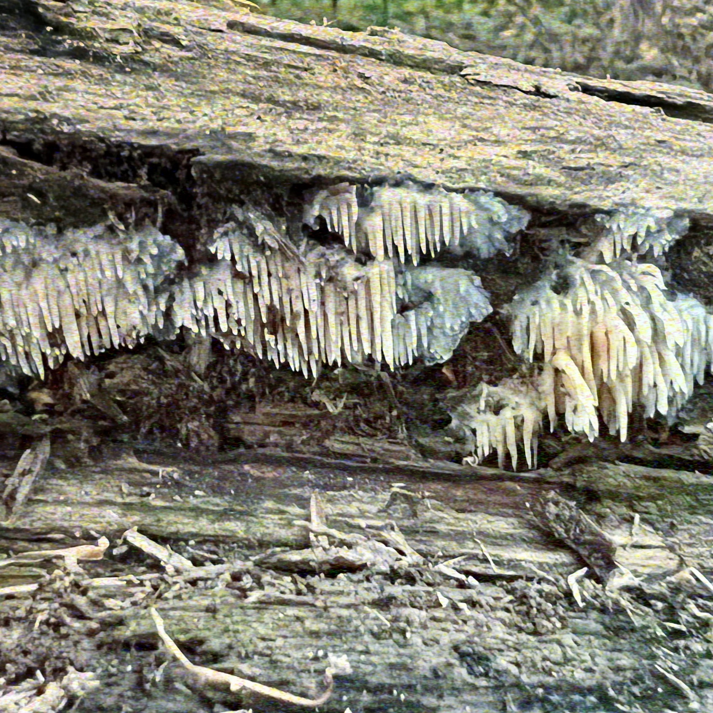
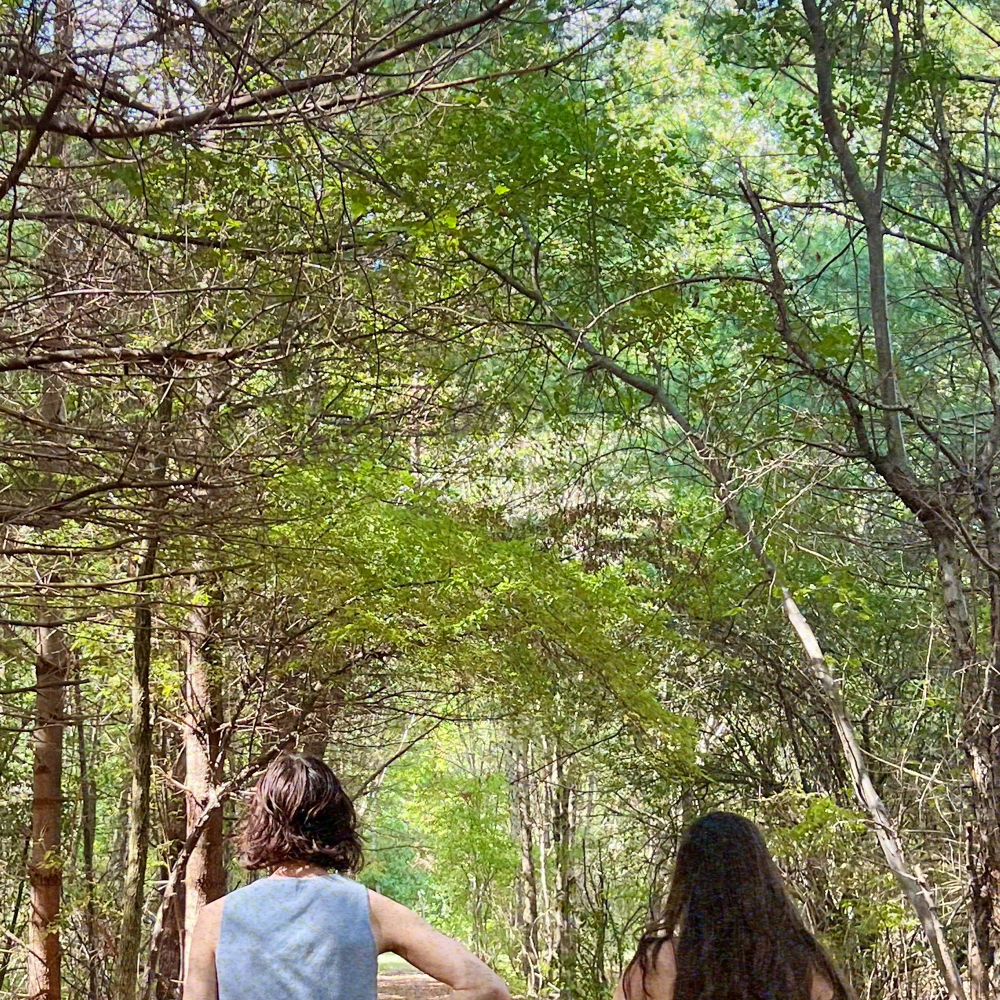
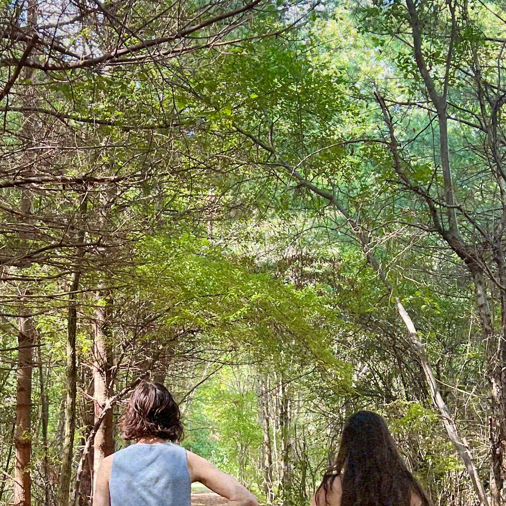

Parcel B exists to support and share in the creation and ongoing success of companies founded by people who have attended Olin College of Engineering.
Our pursuit of this fund is an act of conviction in the Olin educational model and the people who emerge from it.


 




 


Parcel B is the undeveloped plot of land that sits next to Olin's campus. It's the undefined, the messy, and the wild where we do some of our best learning and best creation.
Portfolio
History
Parcel B began as a loose collective of alumni in 2017, investing in various Olin founded startups and hosting small community spaces and fellowships. We became a formalized fund as of 2024 to make involvement easier and more accessible, while allowing us to better leverage and gather resources for the founders we support.